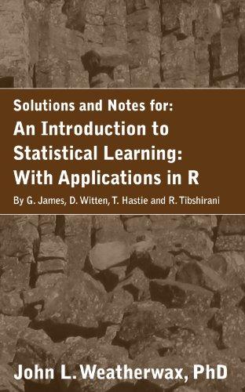
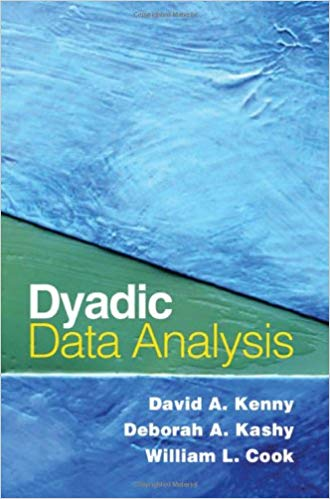

MAT 1012 - Statistical Applications
Text Book
| A Solution Manual and Notes for: An Introduction to Statistical Learning: with Applications in R: Machine Learning |
| Author: |
Gareth James |
 |
| Publisher: |
Amazon Digital Services |
| E-Book: |
Download E-Book |
Reference Book
| Dyadic Data Analysis (Methodology in the Social Sciences) |
| Author: |
David A. Kenny |
 |
| Publisher: |
The Guilford Press |
| Edition: |
1st edition |
| E-Book: |
Download E-Book |
| An Introduction to Statistical Learning: with Applications in R |
| Author: |
Gareth James |
 |
| Publisher: |
Springer |
| Edition: |
1st edition |
| E-Book: |
Download E-Book |